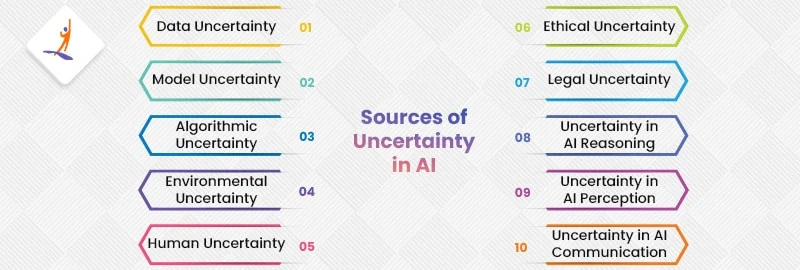

AI & DS 2
Define BNN. Explain with Example
A Bayesian Network (also known as a Bayes Network, Belief Network, or Causal Network) is a probabilistic graphical model that represents a set of variables and their conditional dependencies via a directed acyclic graph (DAG). Here are the key aspects of Bayesian Networks.
What is decision theory. Explain with Example
Decision theory is an interdisciplinary field that focuses on the logic and methodology of making choices, particularly under conditions of uncertainty. Here are the key aspects of decision theory:
Core Elements:
- Acts: The actions being considered by the decision-maker[](https://klu.ai/glossary/decision-theory)[](https://study.com/academy/lesson/decision-theory-definition-types-examples.html)[](https://corporatefinanceinstitute.com/resources/career-map/sell-side/capital-markets/decision-theory/).
- Events: Occurrences outside the control of the decision-maker[](https://klu.ai/glossary/decision-theory)[](https://study.com/academy/lesson/decision-theory-definition-types-examples.html)[](https://corporatefinanceinstitute.com/resources/career-map/sell-side/capital-markets/decision-theory/).
- Outcomes: The results of the combination of acts and events[](https://klu.ai/glossary/decision-theory)[](https://study.com/academy/lesson/decision-theory-definition-types-examples.html)[](https://corporatefinanceinstitute.com/resources/career-map/sell-side/capital-markets/decision-theory/).
- Payoffs: The value associated with outcomes, which can be in terms of money, utility, satisfaction, etc.[](https://klu.ai/glossary/decision-theory)[](https://study.com/academy/lesson/decision-theory-definition-types-examples.html)[](https://corporatefinanceinstitute.com/resources/career-map/sell-side/capital-markets/decision-theory/).
Example:

Let’s examine the scenarios
- Scenario 1: There is presence of cancer and the physician decides to perform a surgery. That is 100% because its the best decision to take.
- Scenario 2: There is presence of cancer but the physician decides not to perform a surgery. That is a score of 0 as it is the worst case scenario and of course the consequences would be very serious.
- Scenario 3: Cancer is absent but the physician decides to perform a surgery anyway. This is a low score but does not result in any serious consequence
- Scenario 4: Cancer is absent and the physician decides not to perform a surgery. This is a good decision as well
False Positives and False Negatives
- False Positive: Let’s assume that after a test the physician decides that based the diagnosis, cancer is present (that is a positive result is obtained for cancer test). If actually cancer is not present..
- False Negative: If on the other hand the doctor finds out that there is no cancer(a negative result is obtained) and actually there is cancer, then this result is considered .
One objective of decision theory is to minimize both the false positive rate and the true positive rate.
Area Under the Curve(AUC)
The area under the curve is equal to the probability that a classifier will rank a randomly chosen positive instance higher than a randomly chosen negative one.
Define cognitive computing & explain elements of it with neat diagram.
Cognitive computing is the use of computerized models to simulate the human thought process in complex situations where the answers might be ambiguous and uncertain.
The phrase is closely associated with IBM's cognitive computer system, Watson.
To achieve those capabilities, cognitive computing systems must have the following attributes:
- Adaptive. Systems must be flexible enough to learn as information changes and goals evolve.
- Interactive. Users must be able to interact with cognitive machines and define their needs as they change.
- Iterative and stateful. Cognitive computing technologies can ask questions and pull in additional data to identify or clarify a problem.
- Contextual. Cognitive systems must understand, identify and mine contextual data, such as syntax, time, location, domain, user requirements, user profiles, tasks and goals.
Elements of Cognitive computing

- Machine Learning (ML):
- Systems learn from data patterns and improve over time without explicit instructions.
- Natural Language Processing (NLP):
- Enables systems to understand and respond to human language naturally.
- Reasoning:
- Analyzes problems, makes informed decisions, and mimics human logical thinking.
- Speech and Vision Recognition:
- Allows interaction with the world through speech and visual data interpretation.
- Human-Computer Interaction (HCI):
- Focuses on user-friendly interfaces for effective human-system interaction.
- Adaptive Learning:
- Systems adapt and evolve based on new data and interactions.
Explain fuzzy control system. ✅
Describe the fuzzy set properties with an example.
Define defuzzification and state necessity of the defuzzification process.
 Defuzzification is the inverse process of fuzzification, where the goal is to map a fuzzy set to a crisp set. This process is necessary because many applications require crisp control actions, and fuzzy results need to be converted into actionable, precise values. There are several common defuzzification methods: - **Centroid:** The centroid method calculates the weighted average of the membership values of all elements in the fuzzy set. - **Mean of Maxima:** This method selects the mean value of all elements with maximum membership values. - **Maximum Membership:** This method simply selects the element with the highest membership value. - **Smallest of Maxima:** This method selects the smallest element among those with maximum membership values. - **Largest of Maxima:** This method selects the largest element among those with maximum membership values. **Necessity of Defuzzification:** - **Real-world applications:** Most real-world systems require crisp, numerical outputs. For example, a control system for a robot might need a specific motor speed, or a medical device might require a precise dosage. Defuzzification converts fuzzy outputs into these concrete values. - **Human interaction:** Humans generally prefer crisp, deterministic information. Defuzzification allows fuzzy logic systems to provide outputs that are easily understandable and actionable by humans. - **Integration with other systems:** Many systems, especially legacy systems, are designed to work with crisp inputs and outputs. Defuzzification enables fuzzy logic systems to interface seamlessly with these systems. - **Decision making:** Defuzzification is crucial for making final decisions based on fuzzy inputs. It provides a way to translate fuzzy information into a concrete action or choice. - **Efficiency:** Defuzzification can improve the efficiency of fuzzy logic systems by converting fuzzy outputs into a format that is more easily processed by computers. - **Clarity:** Defuzzification can help to clarify the meaning of fuzzy outputs, making them easier to understand and interpret. ## Perform case study on book recommendation system. **Problem Statement** A popular online bookstore wants to enhance user experience and increase sales by providing personalized book recommendations. They aim to leverage customer data and purchase history to suggest relevant books that align with individual preferences. **Solution Approach** A collaborative filtering approach will be employed to recommend books. This method assumes that users who have similar tastes in the past will likely have similar tastes in the future. **Data Collection and Preparation** - **Customer Data:** Gather information such as customer IDs, purchase history, ratings given to books, and demographics. - **Book Data:** Collect metadata for each book, including title, author, genre, publication year, and keywords. - **Data Cleaning:** Handle missing values, outliers, and inconsistencies in the data. - **Feature Engineering:** Create additional features, such as book age or author popularity, to improve recommendation accuracy. **Model Building and Training** 1. **User-Based Collaborative Filtering:** - Calculate similarity between users based on their shared purchase history or ratings. - Recommend books to a user based on the preferences of similar users. 2. **Item-Based Collaborative Filtering:** - Calculate similarity between books based on their purchase patterns or ratings. - Recommend books to a user based on the similarity between the books they have purchased or rated and other books in the database. 3. **Hybrid Approach:** - Combine user-based and item-based collaborative filtering to leverage the strengths of both methods. **Evaluation** - **Evaluation Metrics:** Use metrics like precision, recall, F1-score, and mean squared error to evaluate the accuracy of the recommendation system. - **A/B Testing:** Conduct experiments to compare the performance of different recommendation algorithms and models. **Deployment and Refinement** - **Integration:** Integrate the recommendation system into the online bookstore's platform. - **Real-time Updates:** Continuously update the recommendation system with new user data and book information. - **User Feedback:** Gather user feedback to improve the system's accuracy and relevance. **Case Study Example: Amazon** Amazon is a prime example of a successful book recommendation system. They use a combination of collaborative filtering, content-based filtering, and other techniques to suggest books to their customers. Amazon's recommendation system has been instrumental in driving sales and enhancing user satisfaction. **Challenges and Considerations** - **Cold Start Problem:** How to recommend books to new users with limited purchase history. - **Data Sparsity:** Dealing with data sparsity, especially for less popular books or users with limited purchase history. - **Scalability:** Ensuring the recommendation system can handle large datasets and real-time recommendations. - **Privacy Concerns:** Addressing privacy concerns related to collecting and using user data. ## Discuss ontology and taexonomy. Ontology and taxonomy are two crucial concepts in the field of Artificial Intelligence (AI), particularly in knowledge representation, information retrieval, and semantic reasoning. ### Ontology in AI - **Definition:** In AI, an ontology is a formal representation of knowledge as a set of concepts within a domain and the relationships between those concepts. - **Purpose:** They allow for the structuring of knowledge in a way that both humans and machines can understand, leading to more effective data integration, retrieval, and reasoning. - **Components:** - **Classes (or Concepts):** The basic entities or categories in the domain. - **Relationships:** How classes or concepts are related (e.g., "is a," "part of"). - **Attributes:** Properties or characteristics of the concepts (e.g., "has color"). - **Instances:** Specific examples of the classes (e.g., a specific car is an instance of the class "Vehicle"). - **Example:** In the medical domain, an ontology might include concepts like "Disease," "Symptom," "Treatment," and their relationships (e.g., "Disease has Symptom," "Treatment addresses Disease"). ### Taxonomy in AI - **Definition:** Taxonomy is a hierarchical classification system that organizes concepts or entities into a tree structure, where each node represents a category and the edges represent a relationship (usually "is a" relationships). - **Purpose:** In AI, taxonomies are often used in areas like natural language processing, information retrieval, and data mining. - **Components:** - **Nodes:** Represent categories or concepts. - **Edges:** Represent the hierarchical relationships between nodes. - **Example:** A taxonomy in the animal kingdom might have "Animal" as the root, with branches like "Mammal," "Bird," "Fish," etc., and further subcategories under each branch (e.g., "Mammal" could include "Primates," "Carnivores," etc.). ## Explain design principles of cognitive computing. A cognitive system should be able to understand any kind of data and communicate with multiple data sources to process structured and unstructured data and generate meaningful insights or recommendations.  - **Identify:** Begin by pinpointing the lowest-level problems that can be addressed using cognitive solutions. These should be specific issues that can be tackled with artificial intelligence. - **Define:** Once you've identified the problems, define the larger business challenges they can help solve. This helps establish the broader context and potential impact of the cognitive solution. - **Brainstorm:** Gather a team to brainstorm various knowledge sources and questions that could be fed into the system. This involves identifying relevant data, information, and queries that will help the system learn and make informed decisions. - **Develop and Train:** Create a prototype of the cognitive system and train it on the collected data and questions. This involves teaching the system to recognize patterns, understand context, and provide insights with a high level of confidence. - **Implement:** Deploy the system in a live environment to gain more training data and knowledge. As the system interacts with real-world scenarios, it can continue to learn and improve its performance. - **Evaluate:** Continuously evaluate the system's performance and gather feedback. This involves assessing its accuracy, efficiency, and effectiveness in solving the identified problems. - **Ensure:** Ensure that the system evolves over time and increases its confidence level. This means regularly updating the system with new data, improving its algorithms, and addressing any limitations or shortcomings. ## How NLP supports in cognitive computing. **Natural Language Processing (NLP)** is a fundamental component of cognitive computing, enabling machines to understand, interpret, and generate human language.  - **Input**: The system receives unstructured data, like speech or text. - **Speech Recognition**: Converts spoken language into text. - **Natural Language Understanding (NLU)**: Interprets the meaning and intent of the text. - **Natural Language Generation (NLG)**: Produces a human-like response. - **Output**: Delivers the system's response or action based on the processed input. **Application of NLP** - **Text summarization:** Condensing long texts into shorter summaries. - **Machine translation:** Translating text from one language to another. - **Sentiment analysis:** Determining the sentiment (positive, negative, neutral) of a text. - **Chatbots and virtual assistants:** Creating conversational agents that can interact with users. - **Information extraction:** Identifying specific information from unstructured text. - **Text generation:** Creating new text, such as articles or poems. **Challenges in NLP** - **Ambiguity:** Natural language is inherently ambiguous, making it difficult for machines to understand and interpret meaning accurately. - **Contextual Understanding:** NLP models often struggle to understand the context of words and phrases, leading to incorrect interpretations. - **Data Scarcity:** Developing high-quality NLP models requires large amounts of labeled data, which can be challenging to obtain for certain languages or domains. - **Dialect and Regional Variations:** NLP systems may have difficulty handling different dialects, accents, and regional variations of a language. - **Domain Specificity:** NLP models may need to be trained on domain-specific data to perform well in specialized areas (e.g., medical, legal). - **Real-time Processing:** NLP systems often require significant computational resources, making real-time processing challenging in some applications. ## Explain bayes theorem. ## Explain MDP with example.
A Markov Decision Process (MDP) is a mathematical framework used in machine learning to model sequential decision-making processes in stochastic environments.
Here are the key components and concepts associated with MDPs:
- States (S):
- Represents all possible situations the agent can be in.
- Example: A robot's position on a grid.
- Actions (A):
- Represents all possible actions the agent can take in each state.
- Example: Moving north, south, east, or west.
- Transition Probability (P):
- The probability of moving from one state to another given a specific action, relying only on the current state and action (Markov Property).
- Reward Function (R):
- The immediate reward received after transitioning between states due to an action.
- Example: Points earned after a game move.
- Policy (π):
- A strategy mapping states to actions, guiding the agent's behavior to maximize long-term rewards.
- Value Function (V):
- Expected cumulative reward starting from a state and following a policy. Governed by the Bellman equation, which relates state values to future rewards.
- Q-Function (Q):
- Expected cumulative reward for taking a specific action in a state and following a policy thereafter. The Q-function helps in deriving the optimal policy by choosing actions that maximize expected rewards.
Example:

An agent lives in the grid. The above example is a 3x4 grid. The grid has a START state(grid no 1,1). The purpose of the agent is to wander around the grid to finally reach the Blue Diamond (grid no 4,3). Under all circumstances, the agent should avoid the Fire grid (orange color, grid no 4,2). Also, the grid no 2,2 is a blocked grid, it acts as a wall hence the agent cannot enter it.
The agent can take any one of these actions: *UP, DOWN, LEFT, RIGHT*
*First Aim:* To find the shortest sequence getting from START to the Diamond. Two such sequences can be found:
- *RIGHT RIGHT UP UPRIGHT*
- *UP UP RIGHT RIGHT RIGHT*
Define uncertainty in AI.
Artificial intelligence (AI) uncertainty is when there’s not enough information or ambiguity in data or decision-making. It is a fundamental concept in AI, as real-world data is often noisy and incomplete. AI systems must account for uncertainty to make informed decisions.

- Data Quality: Inaccurate or incomplete data can lead to unreliable results.
- Model Complexity: The choice of model architecture and parameters can impact performance.
- Algorithmic Variation: Different algorithms can produce varying outcomes for the same problem.
- Environmental Fluctuations: Changing environments can affect system behavior.
- Human Factors: Human behavior and preferences can be unpredictable.
- Ethical Concerns: Privacy, bias, and transparency issues can hinder AI adoption.
- Legal Ambiguity: Laws governing AI may be unclear, leading to legal challenges.
- Reasoning Limitations: AI reasoning techniques can be uncertain due to complex problems or limited data.
- Perception Issues: Sensor noise and environmental factors can impact perception accuracy.
- Communication Challenges: Language and visual cues can be misinterpreted, leading to communication problems.
Differentiate between AI and Cognitive computing
| Aspect | Artificial Intelligence (AI) | Cognitive Computing |
|---|---|---|
| Definition | Broad concept of machines performing tasks intelligently. | Simulates human thought processes to solve problems. |
| Primary Goal | To automate tasks and replace human work. | To assist humans in decision-making. |
| Approach | Operates independently after training. | Augments and interacts with human thinking. |
| Learning | Learns from data using AI techniques. | Learns and adapts based on context and interaction. |
| Decision-Making | Makes autonomous decisions. | Assists in decision-making, leaving the final call to humans. |
| Autonomy | Minimal human intervention. | Requires human interaction for optimal results. |
| Problem Solving | Solves specific, well-defined problems. | Solves complex, context-dependent problems. |
| Examples | Autonomous vehicles, predictive analytics. | IBM Watson, personalized healthcare. |
| Interaction with Humans | Often operates independently. | Collaborates with humans to enhance capabilities. |
| Application Areas | Wide-ranging, including automation and robotics. | Focused on deep analysis sectors like healthcare. |
Explain architecture of fuzzy logic system.

- Rule Base:
- Stores expert-defined rules.
- Uses "if-then" statements to guide decision-making.
- Modern fuzzy theory offers efficient methods for designing and tuning these rules.
- Fuzzification:
- Converts crisp (numerical) inputs into fuzzy terms.
- Inputs are typically measured by sensors.
- Fuzzy terms often include categories
- Large Positive (LP): This indicates a very high value of the variable.
- Medium Positive (MP): This indicates a moderately high value of the variable.
- Small (S): This indicates a low value of the variable, but not necessarily a negative value.
- Medium Negative (MN): This indicates a moderately low value of the variable.
- Large Negative (LN): This indicates a very low value of the variable.
- Inference Engine:
- The core of the fuzzy logic system.
- Processes information and matches inputs to rules.
- Determines which rules are relevant based on input values.
- Combines activated rules to generate control actions.
Defuzzification:
- Converts fuzzy outputs back into a crisp (numerical) value.
- This value is usable by the system or user.
Various techniques exist for defuzzification, each with its own advantages and drawbacks.
Compare fuzzy set and crisp set.
| Aspect | Crisp Set | Fuzzy Set |
|---|---|---|
| Value | 0 or 1 | Anything between 0 & 1 |
| Is | Certern | Uncerten |
| Membership | Full Membership | Partial Membership |
| Used in | Digital design | Fuzzy controller |
| Function logic | Bi-valued | infinite valued |
| Means | True/False, Yes/No, 0/1 | True to False, Yest to No, 0 to 1 |
| Example | She is 18 years old | She is about 18 years old |